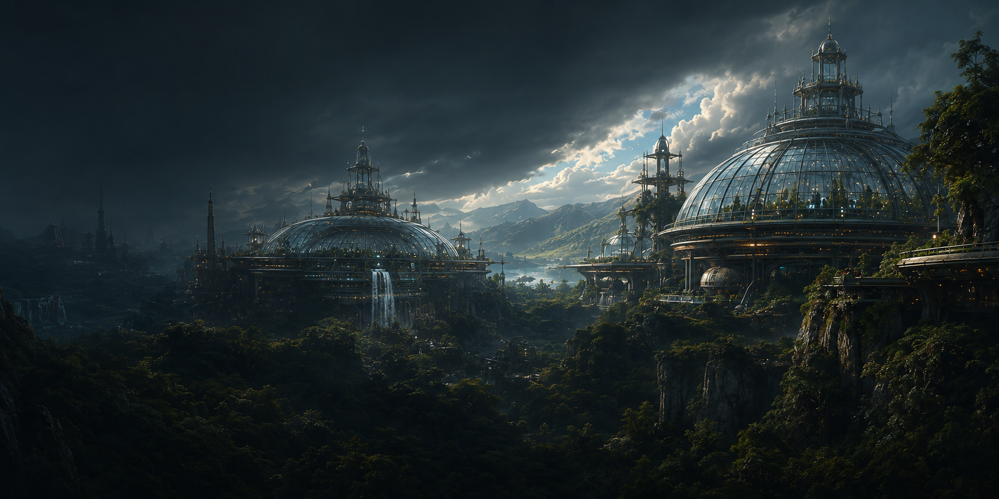
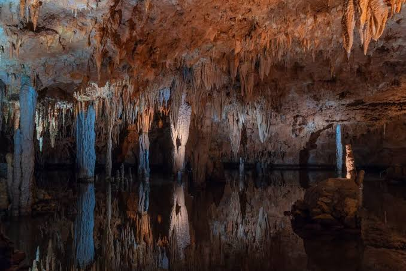
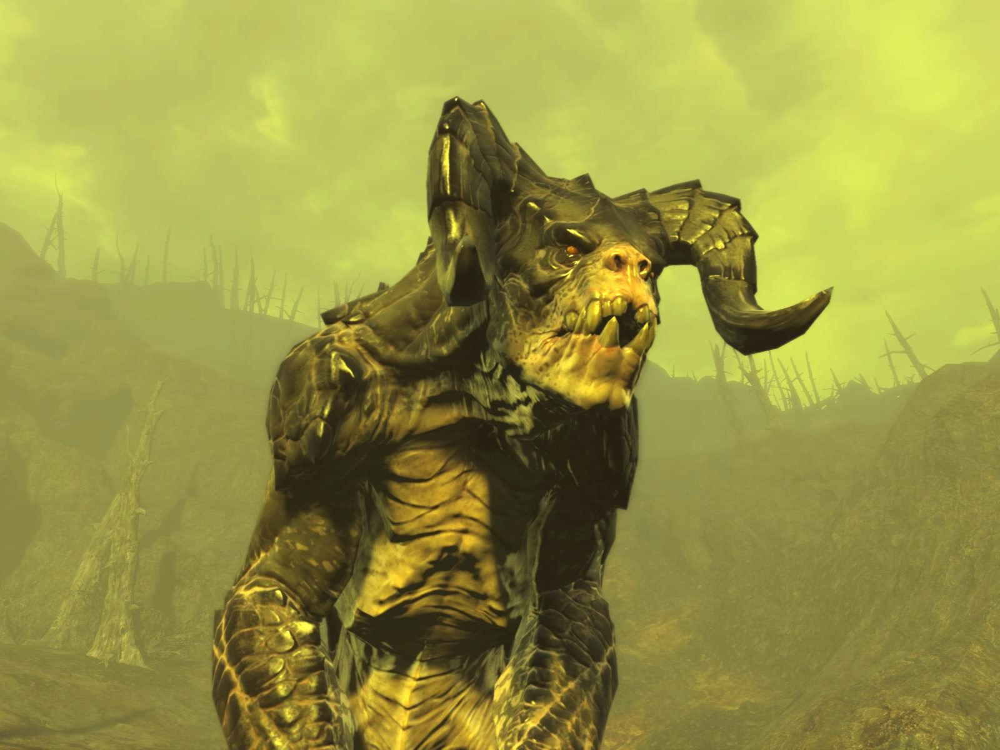

C-21 // Horror
A recovery report for La Piz, stranded in the deep caves of Cranyoen.
- Location
- Cranyoen caves
- Subject
- La Piz
- Risk level
- Severe
Scene 01 // The discovery
The discovery

We discovered the dark caves of Cranyoen and the dangerous creatures that lurk inside. Teamwork became the only reliable way to avoid a fatal first contact.
Scene 02 // The complication
The complication

The creatures were unforgiving. The team had different ideas, and some went rogue. Splitting up caused more damage than the creatures could have managed alone.
Scene 03 // Response
Our Response

Sasakia Charonda was the most unusual subject: a creature whose heritage traces back to the dark caves. It communicates through energy and can manipulate the minds of living creatures.
Scene 04 // Outcome
The Outcome
Half the team perished during the journey, but our notes revealed new insight into the feral world below. La Piz was transported safely and translated the recovered scrolls.